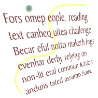
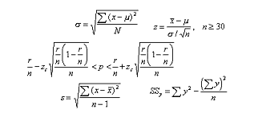

The concept of cognitive disabilities is extremely broad, and not always well-defined. In loose terms, a person with a cognitive disability has greater difficulty with one or more types of mental tasks than the average person. There are too many types of cognitive disabilities to list here, but we will cover some of the major categories. Most cognitive disabilities have some sort of basis in the biology or physiology of the individual. The connection between a person's biology and mental processes is most obvious in the case of traumatic brain injury and genetic disorders, but even the more subtle cognitive disabilities often have a basis in the structure or chemistry of the brain.
A person with profound cognitive disabilities will need assistance with nearly every aspect of daily living. Someone with a minor learning disability may be able to function adequately despite the disability, perhaps even to the extent that the disability is never discovered or diagnosed. Admittedly, the wide variance among the mental capabilities of those with cognitive disabilities complicates matters somewhat. In fact, one may reasonably argue that a great deal of web content cannot be made accessible to individuals with profound cognitive disabilities, no matter how hard the developer tries. Some content will always be too complex for certain audiences. This is unavoidable. Nevertheless, there are still some things that designers can do to increase the accessibility of web content to people with less severe cognitive disabilities.
There are at least two ways to classify cognitive disabilities: by functional disability or by clinical disability. Clinical diagnoses of cognitive disabilities include autism, Down Syndrome, traumatic brain injury (TBI), and even dementia. Less severe cognitive conditions include attention deficit disorder (ADD), dyslexia (difficulty reading), dyscalculia (difficulty with math), and learning disabilities in general. Clinical diagnoses may be useful from a medical perspective for treatment, but for the purposes of web accessibility, classifying cognitive disabilities by functional disability is more useful. Functional disabilities ignore the medical or behavioral causes of the disability and instead focus on the resulting abilities and challenges. Some of the main categories of functional cognitive disabilities include deficits or difficulties with:
The main reason why these functional disabilities are more useful when considering web accessibility is that they are more directly related to the concerns of web developers. Telling a developer that some people have autism is not very meaningful unless the developer knows what kinds of barriers a person with autism might face on his or her web site. On the other hand, telling a developer that some people have difficulties comprehending math provides the developer with a framework for addressing the needs of this type of audience.
Additionally, clinical diagnoses are not mutually exclusive in terms of what difficulties the people face. There is often considerable overlap of functional disabilities within clinical diagnoses. A person with memory deficits may also have difficulty with attention or problem-solving, for example. This kind of overlap fits within a medical model, but is not particularly helpful to web developers, who simply need to know what the person can or cannot do.
Memory refers to the ability of a user to recall what they have learned over time. A common model for explaining memory involves the concepts of working (i.e., immediate) memory, short-term memory, and long-term memory. Some individuals with cognitive disabilities have difficulties with one, two, or all three of these memory types. Some users may have memory difficulties that impair their ability to remember how they got to content. Consider a complex form that displays multiple error messages at the top of the form when submitted. It may be very difficult for the user to remember multiple errors, or perhaps may even forget the error information before they are even able to address that error.
Some individuals with cognitive disabilities have a difficult time solving problems as they arise. In many instances, their resilience can be low and the resulting frustration is such that they choose to leave the site and not persist to solve the problem. One example of this would be the presence of a 404 error from a bad link, or a link that does not take them where they thought they were going.
There are many individuals that have difficulty with focusing their attention to the task at hand. Distractions such as scrolling text, blinking icons, and pop-up windows can make the web environment difficult or even impossible. Even for typical users, such things can be irritating. Good design principles would limit these instances to only that which is necessary to convey the content.
Some people with Attention Deficit Hyperactivity Disorder (ADHD) have difficulties learning, but oftentimes this is due to their distractibility, rather than to any kind of inability to process information. People with ADHD can be impulsive, easily distracted, and inattentive. On a positive note, some people with attention deficits are highly creative and very productive in short bursts, with an abundance of energy and enthusiasm. On a less positive note, it can be difficult for people with ADHD to stick to a task for a long period of time.
Avoiding anything that draws a person's attention away from the main content and using good design, such as color, white space, and simple presentation can help users focus on important content and functionality.
Some individuals have difficulties understanding text. These difficulties may be mild or severe, ranging from minor challenges to a complete inability to read any text. It would be unreasonable to expect web developers to accommodate the entire range of reading abilities. The difference between non-readers and genius readers is simply too vast. It is reasonable, however, to expect developers to write as simply and clearly as is feasible, taking into account the primary audience and including those who may have difficulty with some of the content. After all, an estimated 15-20% of the population, including many of the brightest minds of recent generations such as Albert Einstein, Thomas Edison, and Henry Ford, has some sort of language or text comprehension difficulty.
Here is one example of a reading problem. Note that it may be one of perception or of processing. See if the associated accessibility fix helps you.
What is being said in this phrase?
Tob eornot obe
Now check the power and importance of embedded graphics as a way to enhance the context of the written word by looking at the phrase with a graphic.
Another interesting simulation of a reading difficulty and our resilience in the face of reading problems can be found at http://www.angmail.fsnet.co.uk/jumbltxt.htm.
Non-literal text, such as sarcasm, satire, parody, allegory, metaphor, slang, and colloquialisms, can be a problem for some readers. In some cases, readers will not realize that the words are not meant to be understood literally. A writer who says "I just love getting stuck in traffic when I'm already late for work" probably means the opposite of what this sentence actually says. Sarcasm such as this can be confusing to some readers. Similarly, someone who reads she must "get her ducks in a row" may not realize that the author is probably not referring to real ducks at all. The author is suggesting that the reader get organized or disciplined, using the comparison of a mother duck with her ducklings lined up behind her in order to illustrate the concept.
The unstated assumptions and implied meaning of written content may seem obvious to the writer, but readers may not have the necessary background knowledge. Some readers may not have the skills to infer meaning from text without additional help.
 Mathematical expressions are not easy for everybody to understand. This does not mean that authors should avoid math entirely. For people who are comfortable reading equations and thinking mathematically, the best way to explain mathematical concepts is to use equations. On the other hand, often it is helpful to explain math conceptually, either with or without the formulas. Conceptual explanations help readers understand the reasoning behind the math.
Some individuals have difficulties processing visual information. In many ways, this is the opposite of the problem experienced by people with reading and verbal processing difficulties. Individuals with visual comprehension difficulties may not recognize objects for what they are. They may recognize the fact that there are objects on a web page, but may not be able to identify the objects. For example, they may not realize that a photograph of a person is a representation of a person, though they can plainly see the photograph itself (as an object) on the web page.
For these people, a moving, talking person in a video may be easier to identify and mentally process than a static image of a person in a photograph. Video and multimedia, accompanied with narration, may be the best way to communicate to these individuals.
Any list of design considerations for users with cognitive disabilities can easily turn into a lengthy list of usability concerns and general "good design principles." The ideas presented here do not exhaust all avenues of thought on the topic, by any means. They merely present some of the larger principles which categorize more specific techniques.
Any kind of reminder of the overall context of a web site can help people with memory deficits. Lengthy interactive processes, such as those required to purchase items online, should be kept as simple and brief as possible. To focus the users' attention on specific tasks, the interaction should probably be broken up into separate pages, but help users keep track of their progress so they do not get lost in the process. Simple reminders such as "step 2 of 4" help them keep track of what they have already done and what they have left to do. Each step can also be named or labeled so instead of saying "previous page" and "next page," a link could say "previous page (payment and shipping information)" and "next page (review order)."
Everyone at some point or another accidentally clicks on the wrong link, misspells a word, or commits some kind of error on the web. This is normal human behavior. In some individuals, this tendency is exaggerated, so they make even more mistakes. Whether people make many or few mistakes, everyone likes to be able to correct their errors. Error messages should be as explanatory as possible, telling users what they did wrong and how to fix the problem. Search features should suggest alternate spellings to users if the original spelling seems suspicious or if it returns no results. Users should be warned when actions can cause potentially serious consequences, such as deleting a file. In many cases, providing instructions at the start of a task will eliminate or at least reduce the overall number of user errors. Also, avoid extreme changes in the context of the web site without first warning users. All functionality should be as predictable as possible, and any deviations from predictability should be preceded by warnings and/or explained to users after the changes occur.
Focus the attention of users. Use visual cues to highlight important points or sections of the content. If possible, eliminate advertisements and sponsored links. Use headings to draw attention to the important points and outline of the content. Avoid background noises or images that distract. Use them instead to focus the users attention.
Supplemental media such as illustrations, icons, video and audio have the potential to greatly enhance the accessibility of web content for people with cognitive disabilities. The problem is that high quality media is often difficult to produce. Poor quality media may actually decrease the accessibility of web content, by making it more confusing. But don't use this as an excuse not to try. Use your judgment. Incorporate media where it makes sense. Realize, too, that the vast majority of web content could benefit from some sort of supplemental media, if only supplemental graphics.
As a general statement, the more structured your document is, the easier it will be to understand. Structure in documents can be created by adding:
<blockquote> element)All of the above structural elements can be added into the markup of the document. In other words, there are built in methods in HTML of designating a part of your content as a heading, or a list item, etc.
You can also add visual structure to a document that will benefit those who have sight. For example, you can:
Developers should not ignore the semantics of the markup language when trying to achieve a visual effect. For example, despite the fact that the <blockquote> element causes the text within it to be visually indented, this tag should not be used for its visual effect alone. If the text truly is a quote, then the <blockquote> element is appropriate. If the text is not a quote, then CSS (Cascading Style Sheet) attributes should be used to achieve the effect (for example, the developer could add the following style attribute to the paragraph: style="margin-left: 5%").
It is usually easier to read text when it is visually separated from the borders of the surrounding design. People with reading disorders, such as dyslexia, can benefit from white space in the margins and vertical white space between headings, paragraphs, tables, etc. Long paragraphs can be more difficult to read than shorter ones, partly because readers may lose their place within the paragraph.
Short, simple, unambiguous phrases are easier to understand than long, complex, ambiguous ones. People with more profound cognitive disabilities need sentences that are extremely short, simple, and unambiguous. In some cases, they will not be able to understand sentences at all, relying completely on graphics, illustrations, and other non-text visual materials. This does NOT mean that you have to create image-only sites for general audiences, though adding high-quality supplemental illustrations is certainly a good idea. If, however, your primary audience is individuals with more severe cognitive disabilities you may need to create an image-only site.
To the extent possible, try to avoid non-literal content such as sarcasm, parody, and metaphors. Also make sure to give readers all necessary background information about the topic at hand. (See also the article on writing clearly and simply.)
Math computations or formulas can be difficult for many people to understand, whether they have a genuine deficit in math comprehension abilities or just "math phobia," to use the term "phobia" loosely. In this context, math phobia is not a clinical condition but a simple dislike of math, influenced largely by cultural factors. The United States, for some reason, has created a culture in which math is commonly disliked and derided. By way of comparison, math abilities are highly prized in Asian countries, and it would be somewhat of an insult to say that an Asian person is not good at math.
No matter what the cause of math comprehension deficits—biologically-based deficits or culturally-based aversions—authors can increase the understandability of their content by either avoiding math altogether, or by explaining the math conceptually. Where computations are required—as in e-commerce sites that add the price of the items purchased, tax, shipping and handling, and other charges—it is usually best to perform these computations automatically, so the user does not have to.
Usually, the best advice to help users with cognitive disabilities is to provide information in muliple formats, with a heavy emphasis on visual formats. While this remains true for the majority of people with cognitive disabilities, some types of cognitive disabilities cause difficulties in visual comprehension. If authors rely entirely on visual communication methods, some users will not understand the message. Visual communication methods include color, spatial relationships, styles, design elements, photos, images, etc.
Even though most web content suffers for a lack of visually-enhanced communicative methods, the take-home message is that no one method is sufficient by itself. Supplement the information with multiple modes and methods of communication.
Here are your instructions:
Here's what your origami cup should look like (although the color of your paper may be different):
How closely does your origami cup match the one pictured above? Is it even close? If not, why not?
Although some of you may have been able to complete the task of folding an origami cup by simply reading the instructions, my guess is that most of you got a little bit confused at some point along the way. My instructions may have seemed ambiguous to you. They may have seemed poorly written. Perhaps you misunderstood my instructions even when you thought that you understood them.
Note
The following example presents visual content that will not be of use to people who cannot see it, but we have provided a brief discussion of this material in the Note About Visual Disabilities section.
Compare the written instructions to a visual method of instruction:
After looking at the above visual methods of giving instructions on the task:
Those of you who are visually-oriented were at a cognitive disadvantage when trying to fold an origami cup with nothing more than written instructions. Individuals with learning disabilities, reading disorders, or more profound cognitive disabilities often feel similarly disadvantaged when trying to understand concepts that are difficult for them. Content needs to be clear and accurate, and sometimes in more than one format, in order for these individuals to fully understand content. In the case of folding an origami cup, illustrations and animations are particularly useful. With other types of information, audio content may be more appropriate.
In many cases, the techniques for more making web content accessible to people with cognitive disabilities are nothing more than techniques for effective communication.
Once you understand this principle, the task of making content accessible to people with cognitive disabilities becomes a little bit less mysterious, even if it doesn't become less challenging.
Designing for people with cognitive disabilities is much more of an art than a science. Some people prefer animated instructions, while others prefer static graphical illustrations. But it is not a simple matter of static versus animated illustrations. The effectiveness of graphics and animations depends largely on the skills of the artist, both in the sense of draftsmanship ("being able to draw well") and presentation (being able to communicate well).
As you can imagine, illustrations, graphics, and other materials that are visually-oriented are going to be useless to someone who cannot see them. This does NOT mean that there is a direct conflict between the needs of people with visual disabilities and the needs of people with cognitive disabilities. It simply means that you have to keep the needs of both audiences in mind. If you provide illustrations for people with cognitive disabilities, provide alt text for those illustrations to benefit those with visual disabilities. If you provide videos, provide a transcript of the videos that can be accessed by screen readers, and so on. In the case of the origami cup, more detailed instructions would probably need to be written for a blind person to be able to perform the task more effectively. These detailed instructions would be the "text alternative" to the illustration format. With both illustrations and detailed textual instructions, both audiences would receive what they need.